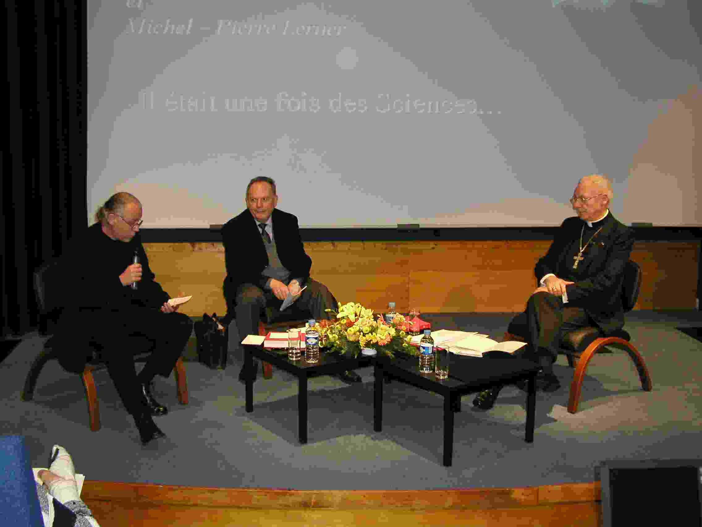
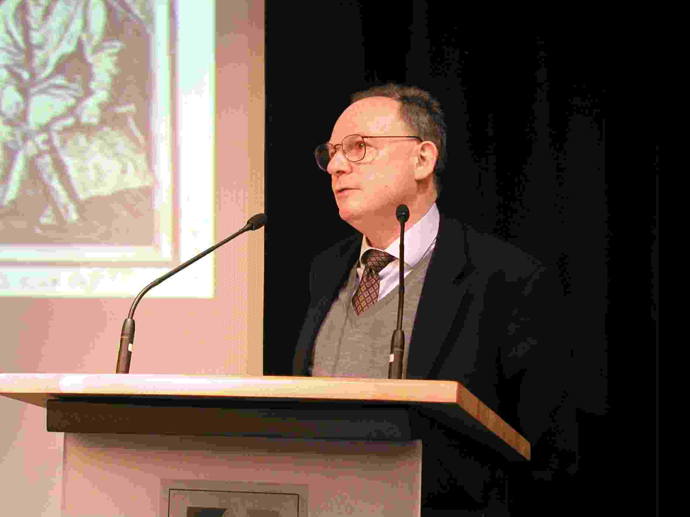
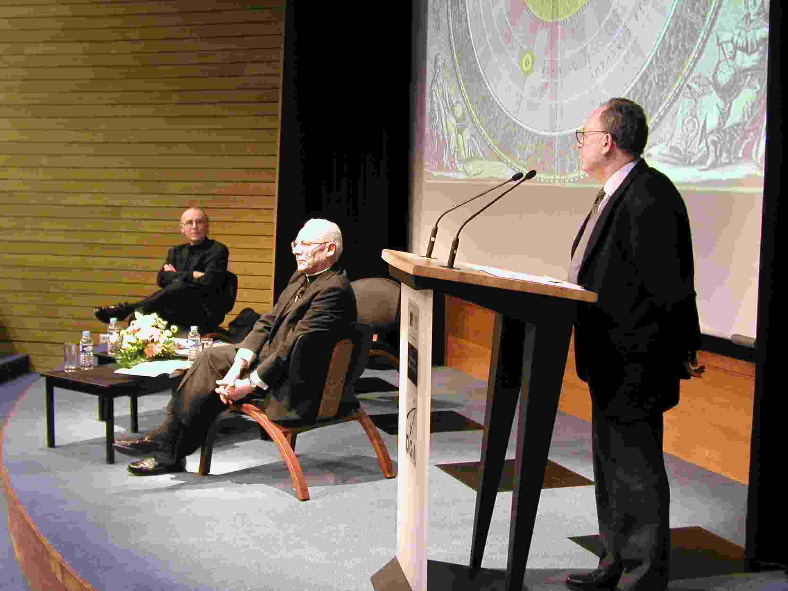
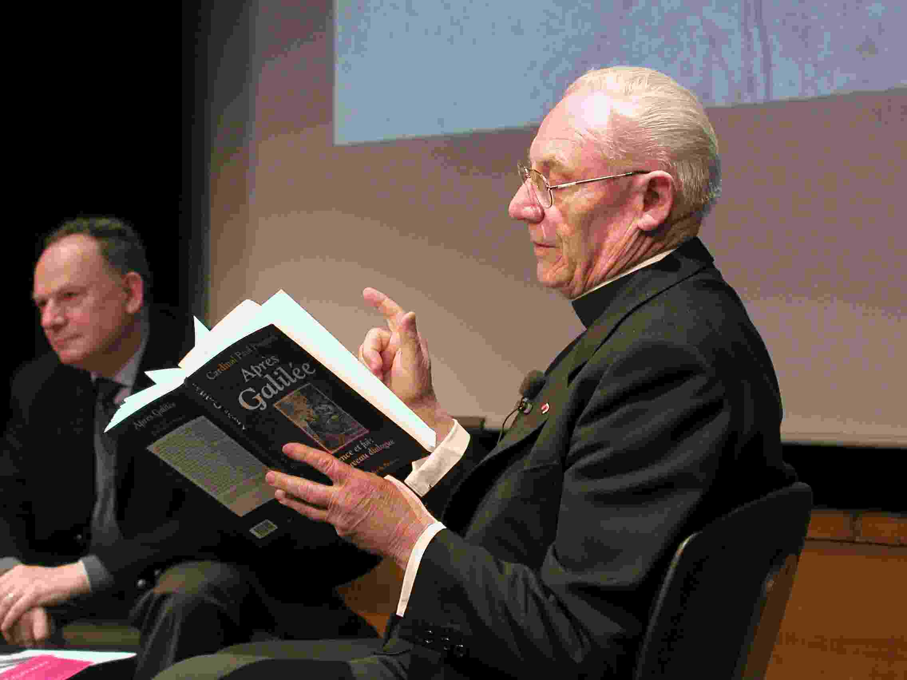
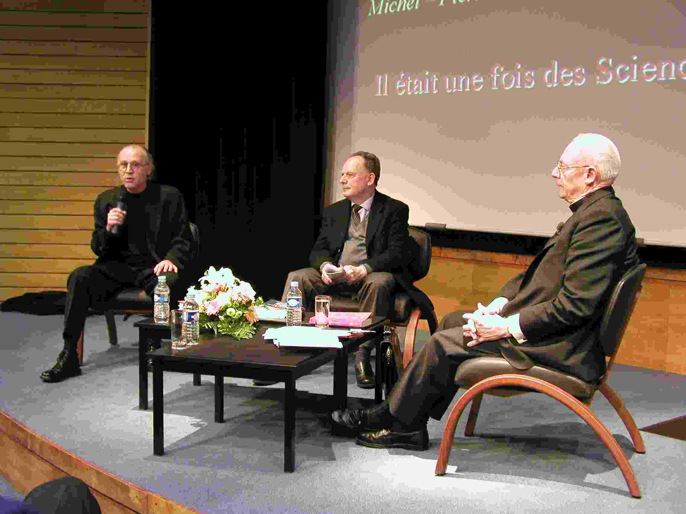

Le dernier débat sur l'affaire Galilée
Débat de clôture du cycle de conférences "Il était une fois des sciences...", organisé par Jérôme PEREZ, du 12 décembre 2001 au 27 Mars 2002.


Stéphane Deligeorges
Monseigneur Poupard, président du Conseil Pontifical pour la Culture, a dirigé un des gigantesques dictionnaires des PUF Le Dictionnaire des Religions, qui montre qu’il y a encore un grand intérêt pour les dictionnaires encyclopédiques car il en est à sa 3ème édition. Un autre ouvrage du Cardinal Poupard s’intitule Après Galilée, dont le sous-titre est science et foi, nouveau dialogue.
Michel-Pierre Lerner est directeur de recherche au CNRS. Depuis très longtemps il s’intéresse aux doctrines, aux théories, aux sciences astronomiques — sujets sur lesquels il a publié en 1996 et 1997 aux éditions Les Belles Lettres un ouvrage en deux volumes intitulé Le Monde des sphères. Parmi ses travaux anciens, il a avec Pierre Costabel, grand spécialiste de l’histoire des sciences maintenant décédé, fait un travail sur l’édition de Mersenne intitulée Les Nouvelles Pensées de Galilée (Vrin 1973) qui est une adaptation par Mersenne des Discorsi de Galilée publiés en 1638.
Pour rentrer dans le vif du sujet, si ce n’est pas du débat, on a le sentiment et après tout peut-être que c’est tant mieux, que l’affaire Galilée, que l’histoire Galilée est un peu comme disent les psychanalystes, interminée et interminable. Peut-être est-ce très bien qu’elle soit interminable pour des questions de mémoire et aussi pour restituer la figure du grand homme.
Je vais donner quelques éléments, quelques indices, quelques repères, purement chronologiques de Galileo Galilei au rappelant qu’il est né à Pise le 15 février 1564, que son père était musicien, théoricien de la musique et qu’il avait très tôt, une volonté ferme que son fils soit médecin, qui était une grande carrière bien sûr à l’époque.
De 1574 à 1581, Galilée est à Florence, il va retrouver Pise dans l’année 1581 et c’est là qu’il va commencer la faculté de médecine qu’il abandonnera en 1585 pour cette fois délibérément, franchement se tourner vers l’étude des mathématiques qu’il va poursuivre avec Ostilio Ricci.
En 1589, Cosme II lui propose la chaire de mathématiques, ce qui était évidemment une grande promotion. En 1592, il est dépendant de la république riche de Venise, professeur de mathématiques à Padoue.
En 1604, apparaît cette fameuse nova de Kepler.
En 1609, et là encore le point est controversé mais en tout cas on peut voir son intelligence de physicien, c’est donc sa mise au point de sa lunette (qui montrait qu’il avait un œil de lynx) qui ne permet de grossir que 30 fois dans sa meilleure situation et qui lui permet de découvrir les fameux 4 satellites médicéens. 
En 1610, il publie les résultats dans Le messager Céleste où il parle de ces fameuses étoiles médicéennes – c’est Cosme II qui a voulu changer le nom que voulait leur donner Galilée. Il voit dans sa lunette que sur la lune, il y a des montagnes.
Enfin, en 1610, il s’installe à Florence, sur l’invitation de Cosme II pour être mathématicien et philosophe du grand duc de Toscane.
En 1611, il est académicien de l’Accademia dei Lincei, et c’est en 1615 que le dominicain Lorini le dénonce, c’est la première étape. Nouvelle dénonciation en mars de la même année, par un autre dominicain, Caccini et enfin en 1623, Maffeo Barberini, qui était un des soutiens possibles de Galilée, devient Pape sous le nom d’Urbain VIII.
Le 21 février 1632, le Dialogue sur les deux grands systèmes du monde qui montre trois personnages en train de dialoguer, reçoit un double imprimatur de l’inquisiteur de Florence et de Rome. Mais le 21 juillet 1632 le livre est interdit, le 27 septembre de la même année, Urbain VIII décrète l’ouverture d’un procès contre Galilée, le 22 juin Galilée écoute la sentence et abjure en prenant ce risque, bien évidemment s’il replongeait dans l’hérésie, d’être à nouveau, cette fois, accusé d’être relaps.
Enfin, aveugle, ayant vécu pratiquement toute sa vie avec ses deux filles qui étaient à proximité dans un couvent, il meurt à Florence dans la nuit du 7 au 8 janvier 1642 qui est l’exacte année de naissance de Newton. On ne peut que constater cet effet numérologique de continuité, puisqu'il était né en 1564, l’année de la mort de Michel-Ange.
On peut constater que cette histoire n’en finit pas car tous les camps ont essayé de récupérer Galilée, que ce soient les empiristes (on pourrait donner des noms d’historiens, d’épistémologues d’histoire des sciences), que ce soient les rationalistes (évidemment, on peut penser à Koyré), que ce soient les néo-positivistes, que ce soient même les scientistes les plus durs, pour en faire le premier grand martyr de la laïcité face à l’obscurantisme désigné de l’époque, soit au contraire d’en faire une figure d’anarchiste roublard et extraordinairement habile dans ses affirmations et sa rhétorique. Vraiment, ce personnage là, semble comme inépuisable, la preuve en est que, à nouveau, on va reprendre les termes de l’Affaire Galilée, et on ne va certainement pas s’ennuyer.
Michel Lerner
Pendant longtemps, tout était paru évident, mieux même: irréfutable. La terre occupait, immobile, le centre du monde. Autour d’elle, on voyait — on voit du reste toujours — tourner dans le ciel les planètes et les étoiles. Le repos appartenait par nature au globe terrestre lourd et inerte, le mouvement circulaire uniforme par essence aux corps célestes impondérables transportés par des sphères invisibles. Le monde géocentrique, avec ses cieux concentriques s’enveloppant en pelures d’oignon jusqu’au plus élévé et au plus rapide d’entre eux, pur produit conceptuel de la science grecque (Aristote et Ptolémée pour en citer les principaux artisans), avait été en quelque sorte consacré par les théologiens chrétiens. Théologiens (il faut au moins mentionner Thomas d’Aquin, le plus influent d’entre eux) qui crurent en effet retrouver dans la Bible la terre immobile et ronde ainsi que le ciel sphérique des Grecs, et qui inscrivirent progressivement l’économie du salut dans ce cosmos hiérarchisé, y ajoutant de leur propre chef un ciel singulier, l’empyrée, séjour immobile et lumineux des saints et des élus. 
Cette représentation du cosmos allait être mise en cause au début du XVIe siècle par Nicolas Copernic. Dans le Commentariolus composé vers 1510 et resté inédit de son vivant, Copernic énonçait un certain nombre de propositions proprement absurdes. J’en citerai seulement deux :
Tout mouvement qui paraît appartenir à la sphère des étoiles ne provient pas d’elle, mais de la terre. La terre, donc, accomplit d’un mouvement diurne une révolution complète, tandis que demeure immobile la sphère des fixes ou ciel ultime. Les mouvements qui nous paraissent appartenir au soleil ne proviennent pas de lui, mais de la terre avec laquelle nous effectuons des révolutions autour du soleil comme n’importe quelle autre planète.
Trente ans plus tard, en 1543, Copernic développait ces idées dans le De revolutionibus orbium coelestium, somme astronomique qu’il dédiait au pape Paul III. Pourquoi dédier au Souverain Pontife un livre dans lequel une doctrine si contraire au sens commun était défendue comme vraie?
Peut-être Copernic avait-il été encouragé à s’adresser directement à Paul III en raison de l’accueil favorable que, dix ans auparavant, le pape Clément VII avait réservé à un exposé de son hypothèse fait à Rome par un de ses disciples. Mais sa décision s’expliquait surtout par l’expérience, qui lui avait laissé un cuisant souvenir, des vives réactions de rejet que l’idée héliocentrique avait nourrie tant du côté des philosophes attachés à la lettre d’Aristote que des théologiens invoquant la lettre de l’Ecriture sainte. C’est en particulier contre ces derniers que le chanoine catholique Copernic demande la protection du chef suprême de l’Eglise romaine :
Si d’aventure il se trouve de vains discoureurs qui, tout en étant totalement ignorants des mathématiques, prétendent néanmoins juger de ces matières, [et] qui, en raison de tel ou tel passage de l’Écriture malignement détourné dans le sens de leur opinion, osent blâmer et attaquer mon ouvrage, eh bien! je ne me soucie aucunement d’eux; mieux même, je méprise leur jugement comme téméraire. On n’ignore pas, en effet, que Lactance par ailleurs célèbre écrivain mais piètre mathématicien, parle d’une façon tout à fait puérile de la forme de la terre, lorsqu’il tourne en dérision ceux qui ont enseigné que la terre a la forme d’un globe. C’est pourquoi les savants ne doivent pas s’étonner si de tels gens nous tournent aussi en dérision. Les mathématiques sont écrites pour les mathématiciens [...]
Par ces propos fort peu diplomatiques, Copernic formulait son opinion en toute clarté : la science astronomique est du domaine exclusif de compétence des “mathématiciens”, les seuls à qui il s’adresse et avec lesquels il accepte de débattre. Les théologiens n’ont pas voix au chapitre, et l’expérience devrait leur enseigner la prudence: lorsque Lactance a voulu donner des leçons de cosmographie appuyées sur l’Ecriture, il s’est couvert de ridicule.
Bien que précédée d’un avertissement anonyme qui invitait le lecteur du De revolutionibus à ne pas tenir pour vraie l’hypothèse héliocentrique présentée par l’auteur dans son livre, mais seulement comme une fiction utile pour le calcul des apparences célestes, l’audace de Copernic ne devait pas rester sans réponse. Confiée pour examen à Bartolomeo Spina, Maître du Sacré Palais et théologien officiel du pape Paul III, son œuvre échappa de peu à la censure en 1547. Et l’on connaît le jugement que nous a laissé un an plus tard Giovanni Maria Tolosani, un théologien dominicain ami de Spina: Copernic est gravement déficient en matière de sciences physiques et dialectiques, et ignorant dans les lettres sacrées qu’il contredit, non sans danger d’impiété pour lui et pour les lecteurs de son livre. Aussi Tolosani a-t-il estimé nécessaire de dénoncer auprès des catholiques le “ scandale ” de la fausse doctrine copernicienne. Pour autant, ce jugement critique — qui préfigure des prises de position analogues au siècle suivant — n’entraînera dans l’immédiat aucune condamnation officielle de Copernic par Rome.
Quelque soixante-cinq ans plus tard, en 1614, Galilée était dénoncé en chaire à Florence par Tommaso Caccini, un confrère de Tolosani dont il a pu connaître l’écrit. Il reprochait à Galilée non seulement de défendre l’idée absurde que le soleil est immobile au centre du monde et que la terre tourne autour de lui, mais d’avoir osé écrire que dans le domaine de la nature, c’est à l’expérience et à la raison qu’il faut en appeler primordialement, pas à l’Ecriture sainte dont l’objectif premier est de dispenser aux hommes un enseignement d’ordre moral et spirituel.
Ces idées de Galilée revendiquant l’autonomie de la recherche philosophique et proclamant qu’il n’y a pas contradiction entre les nouvelles vérités physiques et les passages cosmologiques de la Bible pourvu qu’ils soient correctement interprétés, lui vaudront d’être dénoncé devant le Saint-Office à Rome en mars 1615.
Il est clair que Galilée, simple laic, s’était mis objectivement dans une mauvaise passe en proposant — dans le même esprit que Copernic, mais avec des arguments d’ordre exégétique savamment élaborés — un autre partage de compétences entre la philosophie naturelle et la théologie, qui limiterait le champ légitime d’intervention des théologiens aux matières strictement de foi et de mœurs, comme il était indiqué dans le décret relatif à l’interprétation de l’Ecriture promulgué par le Concile de Trente en 1546. Les choses allaient cependant prendre une tournure beaucoup plus sérieuse le jour où le carme Paolo Antonio Foscarini adopta sur ce sujet une position proche de celle de Galilée. Provincial de Calabre et théologien de grande réputation, Foscarini avait été invité par son protecteur le cardinal Millini, membre de la Congrégation du Saint-Office, à venir à Rome pour y prêcher le carême de l’année 1615. C’est ce religieux qui, dans sa Lettre sur l’opinion des pythagoriciens et de Copernic publiée en italien à Naples au début de 1615, avait soutenu que l’héliocentrisme étant une doctrine astronomique des plus probables, il convenait d’interpréter dans le sens de l’accommodation certains passages scripturaires jusque là glosés à la lettre en faveur du géocentrisme banal. Dans un texte latin adressé au cardinal Bellarmin, Foscarini était allé encore plus loin: quelle que soit l’opinion que l’on peut avoir touchant la mobilité ou l’immobilité de la terre, il s’agit d’une question qui ne relève pas de la foi et des moeurs et qui ne touche en rien aux dogmes catholiques.
A cette position de prudence en même temps que de respect pour l’autorité pleine et entière des théologiens interprètes de l’Ecriture dans les seuls domaines expressément définis par le Concile, Bellarmin va répondre par une fin de non recevoir catégorique dans la célèbre et trop souvent mal interprétée lettre du 12 avril 1615.
Invitant Galilée et Foscarini à s’en tenir à la conception traditionnelle de l’hypothèse en astronomie, Bellarmin nie la possibilité d’une démonstration réelle de la mobilité de la terre autour du soleil. Selon lui, cette doctrine est contraire à la raison et au sens commun puisque l’expérience de tous les hommes atteste que la terre est immobile. Mais elle est surtout contraire à l’Ecriture sainte qui, par la bouche de son prophète Salomon, nous instruit indubitablement quant à la course quotidienne du soleil autour de la terre. Et nier que “le soleil se lève et se couche” comme Salomon l’a dit sous l’inspiration de l’esprit saint serait hérétique au même titre que nier qu’Abraham a eu deux fils et Jacob douze, ou encore nier la naissance virginale du Christ.
La cosmologie biblique est donc pour Bellarmin, au même titre que l’Ecriture en son ensemble, objet de foi. D’où il suit que l’opinion de Copernic a toutes les apparences d’une hérésie (c’est ainsi en tout cas que Bellarmin l’avait qualifiée en parlant au Prince Cesi, président de l’Académie des Lynx, en janvier 1615), et l’on ne voit pas comment notre cardinal aurait pu seulement envisager que la mobilité de la terre fût un jour prouvée. Cela aurait été en contradiction avec la vérité littérale de l’Ecriture et avec tout ce qu’il croyait lui-même, comme l’atteste le De ascensione mentis in Deum per scalas rerum creatarum, un traité d’inspiration spirituelle publié par lui précisément en 1615, où est décrit l’itinéraire de l’âme en quête de la connaissance de Dieu, et qui commence par la considération de la terre, définie comme “ le fondement tout à fait stable du monde entier, sans lequel l’homme ne pourrait ni se déplacer, ni se reposer, ni œuvrer, ni vivre en aucune façon ”, proposition que Bellarmin confirme en citant deux versets bien connus tirés du Psaume 92 (“ Il a affermi le vaste corps de la terre, en sorte qu’il ne sera point ébranlé ”) et du Psaume 103 (“ Tu as fondé la terre sur sa propre stabilité ”).
Galilée, qui a eu connaissance de la position intransigeante de Bellarmin, n’a pas été convaincu. Dans ses notes de lecture de la Réponse à Foscarini et dans sa Lettre à Christine de Lorraine, il maintient que la théologie n’a pas à imposer sa loi au philosophe qui enquête sur la nature: seules la raison et l’expérience ont compétence pour trancher en la matière. Il est important de rappeler que Galilée n’était pas seul à penser cela à cette date. Telle était aussi la position défendue par l’astronome Jean Kepler dans son Astronomia nova publiée en 1609. Et du côté des théologiens catholiques, deux voix (trop rarement citées) s’étaient fait entendre dans le même sens. Celle du barnabite Redento Baranzano dans son Uranoscopia, et celle d’un dominicain expressément consulté sur cette question en 1615-1616 par le cardinal Bonifacio Caetani (membre de la Congrégation de l’Index): je veux parler de Tommaso Campanella. Dans son Apologia pro Galileo, Campanella défend le droit du savant toscan de conduire librement ses recherches sans ingérence de la théologie, et, s’adressant directement à Bellarmin, il l’avertit du danger qu’il y aurait pour l’Eglise catholique à invoquer le texte sacré pour la défense d’une thèse cosmologique qui pourrait être un jour démontrée fausse.
Le point de vue de théologiens éclairés comme Foscarini, Baranzano et Campanella, et aussi de religieux comme Benedetto Castelli, Pietro Dini, le cardinal Carlo Conti, conseillers de Galilée en matière exégétique, sera malheureusement sans la moindre influence sur les décisions de l’appareil du contrôle doctrinal exercé à Rome par les Congrégations de l’Inquisition (ou Saint-Office) et de l’Index — deux congrégations dont Bellarmin fait partie.
Amenés à se prononcer le 24 février 1616 sur ces deux propositions soutenues par Galilée, à savoir: “ Le soleil est le centre du monde et absolument immobile de mouvement local ” et “ La terre n’est pas le centre du monde ni immobile, mais elle est toute entière mue, y compris d’un mouvement diurne ”, les consulteurs de la Congrégation du Saint-Office les déclarèrent toutes deux “ stupide(s) et absurde(s) en philosophie ”, et en second lieu contraires à la foi — la proposition concernant l’absence de mouvement local du soleil étant définie comme formellement hérétique en tant qu’expressément contraire à plusieurs passages de l’Ecriture sainte entendu selon la propriété des termes et la commune exposition des Pères et des théologiens, celle relative à la terre étant tenue pour seulement erronée au regard de la foi.
Après que Galilée, sur ordre du pape Paul V, eut été invité par le cardinal Bellarmin (sous peine d’emprisonnement) à abandonner son opinion héliocentrique, la Congrégation de l’Index publia le 5 mars 1616 un décret définissant la doctrine pythagoricienne (c’est ainsi qu’était communément désigné l’héliocentrisme restauré par Copernic) comme fausse et tout à fait contraire à l’Ecriture. En conséquence, les cardinaux suspendaient le De revolutionibus en attente de corrections, et interdisaient absolument la Lettera de Foscarini au motif que ce dernier y soutient la vérité de la doctrine de l’immobilité du soleil et de la mobilité de la terre, et sa non contradiction avec l’Ecriture.
Après cette décision par laquelle les gardiens romains de la doctrine de la foi s’étaient autoproclamés juges d’une question cosmologique, l’issue qui conduirait Galilée devant le Tribunal de l’Inquisition à cause du Dialogue sur les deux plus grands systèmes du monde — pourtant publié avec les autorisations ecclésiastiques requises — était pour ainsi dire inéluctable.
Pour faire bref, et pour finir cette courte présentation, je rappelerai seulement que le jeudi 16 juin 1633, le pape Urbain VIII, en qualité de président du Tribunal suprême de l’Inquisition, prononçait le verdict sanctionnant le crime commis par Galilée, à savoir s’être rendu fortement suspect d’hérésie pour avoir soutenu une doctrine qui avait été déclarée contraire aux Saintes Ecritures en 1616. Le savant devrait abjurer son crime, en suite de quoi il serait emprisonné. Il lui serait interdit à l’avenir, sous peine d’être relaps — c’est-à-dire de retomber dans l’hérésie après l’avoir abjurée: crime puni de la mort — de traiter de quelque façon que ce soit de la mobilité de la terre et de la stabilité du soleil. Son livre serait mis à l’Index, et la sentence prononcée contre lui serait envoyée à tous les Nonces et Inquisiteurs pour être portée à la connaissance des professeurs de mathématiques et de philosophie de toute l’Europe catholique.
Six jours plus tard, le 22 juin 1633, Galilée entendait la sentence de condamnation signée par les seuls cardinaux inquisiteurs, mais rédigée sur la base et en exécution du verdict pontifical, après quoi, à genoux devant la cour du Tribunal, les mains posées sur les Evangiles, il renia sous serment la doctrine héliocentrique. Cette sanction gravissime n’était pas une simple mesure disciplinaire pour le non respect d’une interdiction qui lui avait été intimée dix-sept ans plutôt: en obligeant Galilée à abjurer la doctrine héliocentrique “contraire à l’Ecriture dictée par Dieu”, Urbain VIII avait défini la faute commise par le Premier philosophe et mathématicien du grand Duc de Florence comme un crime contre la foi.

On lit parfois que Galilée accepta humblement, en catholique sincère, la peine qui lui avait été infligée. Deux ans après la mort de Galilée survenue en 1642, dans un livre intitulé Anticopernicus catholicus, Giorgio Polacco, dressant un parallèle douteux avec les rétractations de saint Augustin et du pape Pie II Piccolomini, soutenait que la véritable grandeur de Galilée avait résidé non dans son œuvre scientifique, mais dans la reconnaissance de son erreur. Sans doute est-ce là ce qu’un théologien pouvait penser ou vouloir faire croire. Mais l’on sait bien que, en son for intérieur, Galilée n’a jamais admis le coup de force de ceux qui s’étaient institutés ses juges et censeurs et qu’il a clairement protesté contre le châtiment injuste dont il était victime. Certaines remarques autographes conservées dans son exemplaire d’auteur du Dialogo sont particulièrement nettes à cet égard.
Prenez garde, théologiens, qu’en voulant que les propositions touchant le mouvement et le repos du soleil et de la terre soient une matière de foi, vous vous exposez au danger de devoir peut-être avec le temps taxer d’hérésie ceux qui ont soutenu que la terre était en repos et que le soleil se déplaçait dans le ciel...
Qui peut douter que cette nouveauté de vouloir que les intelligences créées libres par Dieu soient rendues esclaves de la volonté d’autrui, n’engendre de très grands scandales?
Et qu’admettre que des personnes tout à fait ignorantes d’une science ou d’un art se mettent en position de juger ceux qui s’y entendent, et que, en raison de l’autorité qui leur est concédée, ils aient le pouvoir de les soumettre à leur arbitraire?
Voilà des nouveautés qui sont propres à ruiner les républiques et à subvertir les états.
Les autorités actuelles de l’Eglise ont-elles pris tant soit peu en compte les remarques essentielles formulées ici par Galilée? Certes, lesdites autorités ont expressément déclaré en 1981 qu’elles ne voulaient ni réviser le procès du savant, ni prononcer sa réhabilitation, se fixant seulement pour but de porter sur la question galiléenne une “réflexion sereine et objective”. Malheureusement, je pense que ce projet, du seul point de vue qui importe à l’historien, à savoir celui de la rigueur et de l’objectivité, n’a pas dépassé le stade des vœux pieux. Les conclusions de la Commission Pontificale rendues publiques en 1992 par le cardinal Poupard, ainsi que le discours du Saint Père avalisant lesdites conclusions, me paraissent loin d’avoir apporté, plus de trois siècles et demi après les faits, l’analyse objective que l’on était en droit d’attendre sur les antécédents, les circonstances, la portée doctrinale et les conséquences pour l’Europe savante catholique de la condamnation infligée en 1633 à Galilée par le chef suprême de l'Eglise romaine, le pape en personne. Je vous remercie.
Stéphane Deligeorges
Presque sans transition, Monseigneur Poupard, voilà bien exprimée à la fin par Michel-Pierre Lerner la position de l’historien, la revendication précise de l’historien. Pour que les choses soient mises dans une bonne perspective, la volonté du Pape de re-envisager ce que l’on peut appeler le “dossier Galilée” ou “l’affaire Galilée” a été prononcé publiquement lors du centenaire de la naissance d’Einstein à l’Académie Pontificale des Sciences. Vous avez été chargé de ce travail qui s’est donc terminé en 1992 par l’état de la réflexion qui a été menée. Alors, il y a deux aspects qui forment débat : les exigences propres, très pointues formulées à l’instant par l’historien professionnel mais qui est d’une certaine manière l’expression de tout homme cultivé, de tout homme honnête qui veut essayer de comprendre, et puis de façon beaucoup plus vague, beaucoup plus diffuse, il y a beaucoup de croyants, comme aussi de non-croyants, qui se disent : mais qu’en est-il, quel est le résultat, quelle est la position de l’autorité catholique sur cette question et plus généralement, est-ce-qu’il y a eu une sorte de procès en révision qui aurait permis une réhabilitation et puis enfin, est-ce que l’Eglise a fait un rêve, une sorte de “mea culpa” pour les représentants historiques qu’elle a eu ayant ce comportement qui était d’une certaine violence, c’est le moins que l’on puisse dire.
Alors, reprenons d’abord : qu’est-ce qui motive Jean-Paul II dans sa volonté de reprendre cette question ?
Cardinal Poupard
Alors, sans vouloir tout démêler, parce que c’est vraiment très emmêlé, je crois que l’important pour tous les participants, c’est d’avoir connaissance des textes. Alors, je me réfère aux deux ouvrages que j’ai publié à dix ans de distance, le premier il y a vingt ans et le second il y a dix ans. Le premier Galileo Galilei, 350 ans d’histoire 1633-1983 dans lequel je donne le texte auquel vous vous référez du Pape et le second dans lequel je présente les conclusions de la commission qu’il avait instituée. C’est donc le 10 novembre 1979, le pape Jean-Paul II, participe à la commémoration du centenaire de la naissance d’Einstein célébrée par l’Académie Pontificale des Sciences.

Galilée et Einstein ont caractérisé une époque. La grandeur de Galilée est connue de tous comme celle d’Einstein, mais à la différence de celui que nous honorons aujourd’hui (Einstein) devant le Collège Cardinalice dans le Palais apostolique, le premier eut beaucoup à souffrir, nous ne saurions le cacher, de la part d’hommes et d’organismes d’Eglise. Le Concile Vatican II a reconnu et déploré certaines interventions indues. Pour nous permettre de déplorer — est-t-il écrit au n° 36 de la Constitution Conciliaire "Gaudium et Spes", c’est un texte intitulé "Sur l’église dans le monde de ce temps" — certaines attitudes qui ont existé parmi les chrétiens eux-mêmes insuffisamment avertis de la légitime autonomie de la science. Sources de tensions et de conflits, elles ont conduit beaucoup d’esprits jusqu’à penser que science et foi s’opposaient.
Fin de la citation du Concile par le Pape que je continue à citer.
La référence à Galilée est exprimée clairement dans la note jointe à ce texte, laquelle cite le volume Vita e opere de Galileo Galilei, (Vie et œuvres de Galileo Galilei) de Monseigneur Paschini édité par l’Académie Pontificale des sciences. Pour aller au-delà de cette prise de position du Concile - donc le pape assume cette position - je souhaite que des théologiens, des savants et des historiens,animés par un esprit de sincère collaboration, approfondissent l’examen du cas Galilée et dans une reconnaissance loyale des torts – c’est toujours le pape qui parle - de quelque côté qu’ils viennent, et fassent disparaître les défiances que cette affaire oppose encore dans beaucoup d’esprits à une concorde fructueuse entre science et foi, entre église et monde, je donne tout mon appui à cette tâche qui pourra honorer la vérité de la foi et de la science et ouvrir la porte à de futures collaborations.
Voilà donc le texte original qui est, je le répète, du 10 novembre 1979 et qui assume donc les prises de positions du Concile et qui souhaite que l’on aille au-delà, mais il n’en dit pas plus. Et c’est donc un an et demi plus tard qu’il constitue la Commission pontificale d’étude de la controverse ptoléméo-copernicienne au 16ème et 17ème siècles. Cette commission — il l’a donc instituée le 3 juillet 1981 — et dans le compte-rendu que je lui donne le 31 octobre 1992 : vous souhaitiez qu’une recherche interdisciplinaire soit entreprise sur les rapports difficiles de Galilée avec l'Eglise et vous avez institué le 3 juillet 1981 une commission pontificale pour l’étude de la controverse Ptoléméo-Copernicienne au 16ème et 17ème siècles dans laquelle s’insère le cas Galilée. Donc vous aviez confié au Cardinal Garone le soin de coordonner les recherches. Vous m’avez demandé de vous en rendre compte.
Cette Commission était constituée en quatre groupes de travail avec pour responsable son Eminence le Cardinal Carlo Martini pour la section exégétique, parce qu’à l’époque, quand j’étais recteur de l’Institut Catholique de Paris, le père jésuite Martini était recteur de l’Institut Biblique Pontifical avant de devenir Recteur de l’Université Grégorienne, puis archevêque de Milan. C’est donc en raison de sa compétence d’exégète. Moi-même, pour la section culturelle. Le professeur Carlos Chagas et le père George Coyne pour la section scientifique et épistémologique. Le premier nommé, à l’époque le Président de l’Académie Pontificale des Sciences, était un brésilien, fils du professeur Chagas, et le père George Coyne était et est toujours le Directeur de l’Observatoire du Vatican. Monseigneur Maccarone pour les questions historiques et juridiques, responsable de la section historique du Vatican et le père Enrico de Rovasenda, secrétaire, il était à l’époque le Chancelier de l’Académie des Sciences.
Le but de ces groupes de travail devait être de répondre aux attentes du monde de la science et de la culture au sujet de la question Galilée, de repenser toute cette question en pleine fidélité aux faits historiquement établis et en conformité aux doctrines et à la culture du temps et de reconnaître loyalement, dans l’esprit du Concile oecuménique Vatican II, les torts et les raisons de quelque côté qu’ils proviennent. Il ne s’agissait pas de réviser un procès mais d’entreprendre un réflexion sereine et objective en tenant compte de la conjoncture historico-culturelle. L’enquête fut large, exhaustive et conduite dans tous les domaines intéressés. La commission s’est posée trois questions : que s’est-il passé, comment cela s’est-il passé, pourquoi cela s'est-il passé ainsi ? QUOI, COMMENT, et POURQUOI ? A ces trois questions, des réponses fondées sur l’examen critique des textes mettent plusieurs points importants en lumière.
L’édition critique des documents, en particulier les pièces émanant de l’Archivio Segreto Vaticano, permettent de consulter facilement, avec toutes les garanties souhaitables, le dossier complet des deux procès et en particulier les comptes-rendus détaillés des interrogatoires auxquels Galilée fut soumis. C’est donc le père Pagano, qui est actuellement le Directeur des Archives du Vatican, qui l’a publié en 1984 dans une collection de l’Académie des Sciences, Pontificiae academiae scientiarum scripta varia. La publication de la déclaration du Cardinal Bellarmin dont il a été rappelé auparavant le rôle qu’il avait joué, joint à celles d’autres documents, éclaire l’horizon intellectuel de ce personnage clé de toute l’affaire.
Ceci a été édité en anglais sous le titre Louvain Lectures (Lectiones Lovanienses) of Bellarmine and the Autograph Copy of his 1616 Declaration to Galileo par les soins du père Coyne, Directeur de l’Observatoire du Vatican, et de Ugo Baldini dans la collection de l’Observatoire du Vatican, Specola Vaticana, toujours en 1984. La rédaction et la publication d’une série d’études ont mis en lumière le contexte culturel, philosophique et théologique du 17ème siècle, c’est donc ce volume Galileo Galilei qui a été publié en même temps en français, italien, anglais et polonais, et pour lequel j’avais fait appel d’une part au père Ginati sur les prédécesseurs de Galilée et Copernic, au père Wallace, un américain de Notre Dame (Chicago) sur Galilée et les professeurs jésuites du Collège Romain à la fin du 16ème siècle. Ensuite deux autres jésuites : le père Vigano sur Galilée et la culture philosophique de son temps et le père François Russo, parisien bien connu, sur Galilée et la culture théologique de son temps,et puis enfin, c’est ce qui justifie le titre de l’ouvrage 350 ans d’histoire 1633-1983, l’Eglise et Galilée au siècle des Lumières par Bernard Jacqueline, Galilée hier et aujourd’hui du Père Costabel, que j’ai bien connu et que j’ai cité tout à l’heure et qui m’avait absolument interloqué quand il avait participé le livre publié aux nouvelles éditions rationalistes en 1981 sur le livre intitulé Echec à la science, la survivance des mythes chez les Français qui donnait les résultats d’une enquête réalisée avec le concours du centre d’études spatiales par un institut de sondage, nous sommes en 1981 à Paris, à la question : “ est-ce que le soleil tourne autour de la terre ? ” 37 % des réponses sont en faveur du tout à fait vrai. Et les organisateurs, après analyse du dépouillement, par tranche d’âge et de profession, concluent qu’un tiers au moins de la population vit encore dans une vision pré-copernicienne.
Stéphane Deligeorges
Ca ne change pas … Statistiquement invariant. C’est exactement comme le taux d’illettrisme, quel que soit le niveau de scolarisation d’un pays, ceux qui croient que le soleil tourne autour de la terre, et en plus, ça augmente à la distance avec leurs études, eh bien cet étiage reste toujours le même dans la population des pays développés. On n’y peut rien ! Ce n’est pas un argument !
Cardinal Poupard
Je cite le Père Costabel : “ le résultat s’insère dans un ensemble qui traduit l’ignorance profonde de l’opinion commune quant à la science en général et à l’astronomie en particulier ; de sorte qu’il est pratiquement impossible d’imaginer un trop grand pourcentage de réponse par surprise – c’est ce que l‘on dit toujours, n’est ce pas ? - force d’admettre, poursuit Costabel, qu’il y a près de 25 % de nos contemporains qui n’ont pas réfléchi à la distinction des apparences et de la réalité propre à propos du mouvement du Soleil que tout un chacun observe chaque jour. Et ce qui est plus grave, le pourcentage est encore de 10 à 20 % pour les personnes qui ont eu une éducation de type secondaire ou supérieure ”. Grâce à Dieu, les scientifiques ou techniciens étant heureusement les moins atteints par l’erreur.
La profession d’une foi religieuse que les enquêtes ont pris en compte ne changent rien au résultat de l’enquête. Alors, Costabel lui-même, qui était un scientifique de haut niveau, il était le secrétaire de l’Union Internationale des Scientifiques qui à l’époque avaient deux Vice-Présidents : un soviétique et un américain, naturellement ; et il m’a dit : “ je ne pouvais pas l’admettre ” et il a donc demandé à un de ses jeunes collègues professeurs de mathématiques à l’Université de faire, lui, un sondage, toutes précautions utiles pour la sincérité, les étudiants se sont prêtés de bonne grâce. Cette enquête très limitée confirme que 15 % de ces universitaires scientifiques ne sont pas en mesure de dire immédiatement pourquoi Galilée a été condamné. 30 % ne savent pas quel mouvement de la terre, rotation autour du soleil ou rotation sur elle-même, était reproché à Galilée, et davantage encore ne relie pas la question à des débats antérieurs donc à Copernic. Quelques uns croient que Galilée a péri sur un bûcher, 20 % pensent qu’il a fini ses jours dans une prison de l’Inquisition, et la très grande majorité déclare que cette vieille histoire n’a plus d’intérêt aujourd’hui. Alors Costabel conclut : “ voilà quelques éléments, qui ne peuvent à la fin d’un propos sur Galilée, aujourd’hui, que susciter l’inquiétude : le divorce entre la culture de haut niveau et la culture de masse et ainsi de suite…
Et j’en reviens donc après cette parenthèse sur la suite du rapport présenté : une meilleure compréhension des prises de position de Galilée par rapport au décret du Concile de Trente, c’est Olaf Pedersen qui a fait cette étude, toujours en anglais, Galileo and the Council of Trent, les orientations exégétiques de son temps, c’était la section dont était chargé le Père Martini, a publié Galileo Galilei e gli orientamenti esegetici del suo tempo, c’était en italien, toujours publié par l’Académie des Sciences ; et une immense littérature consacrée à Galilée du siècle des lumières à nos jours, en particulier une publication qui rend compte d’une conférence à Cracovie: The Galileo Affair A Meeting of Faith and Science. Proccedings of the Cracov Conference éditée par G.V. Coyne, M. Heller et J.M. Zycinski et ensuite Brandmüller, et tant d’autres.
Stéphane Deligeorges
Tout ça va concourir à la déclaration de Jean-Paul II en 1992…
Cardinal Poupard
Alors, le cardinal Bellarmin avait exposé dans une lettre au carme Foscarini les deux vraies questionssuscitées par le système de Copernic : Première question : l’astronomie copernicienne est-elle vraie, dans le sens, qu’elle est appuyée par des preuves réelles et vérifiables, ou repose-t-elle seulement sur des conjectures ou des vraisemblances ? Deuxième question : les thèses coperniciennes sont-elles compatibles avec les énoncés de la Sainte Ecriture ? Selon Bellarmin, aussi longtemps qu’il n’y avait pas de preuve de l’orbitation de la terre autour du soleil, il fallait interpréter avec une grande circonspection les passages bibliques déclarant la terre immobile. Si jamais l’orbitation terrestre venait à être démontrée comme certaine, alors les théologiens devraient selon lui revoir leurs interprétations des passages bibliques, apparemment opposés aux nouvelles théories coperniciennes, de façon à ne pas traiter de fausses les opinions dont la vérité aurait été prouvée.
Le texte de Bellarmin : “Je dis que s’il était vraiment démontré que le Soleil est au centre du monde et la Terre au troisième ciel, et que ce n’est pas le Soleil qui tourne autour de la Terre mais la Terre autour du Soleil, il faudrait alors procéder avec beaucoup de circonspection dans l’explication des écritures qui paraissent contraires à cette assertion, et plutôt dire que nous ne les comprenons pas que dire que ce qui est démontré est faux.”
En fait, Galilée n’avait pas réussi à prouver de façon irréfutable la double mobilité de la Terre, son orbitation annuelle autour du Soleil et sa rotation journalière autour de l’axe des pôles alors qu’il avait la conviction d’en avoir trouvé la preuve dans les marées océaniques dont Newton seulement devait démontrer la véritable origine. Galilée proposait une autre esquisse de preuve dans l’existence des vents alizés, mais personne ne possédait alors les connaissances indispensables pour en tirer les éclaircissements nécessaires. Il fallut donc plus de 150 ans encore pour trouver les preuves optiques et mécaniques de la mobilité de la terre.
De leur côté, les adversaires de Galilée n’ont ni avant lui, ni après lui, rien découvert qui pût constituer une réfutation convaincante de l’astronomie copernicienne et donc les faits s’imposèrent et firent apparaître le caractère relatif de la sentence de 1633 qui n’avait pas un caractère irréformable et en 1741, devant la preuve optique de l’orbitation de la terre autour du soleil, le Pape Benoît XIV fit donner par le Saint-Office l’imprimatur à la première édition des œuvres complètes de Galilée. Nous sommes en 1741, cette réforme implicite de la sentence de 1633 s’explicita dans le décret de la Sacrée Congrégation de l’Index qui retirait de l’édition de 1757 du catalogue des livres interdits, les ouvrages en faveur de la théorie héliocentrique.

En fait, malgré ce décret, nombreux furent ceux qui demeurèrent réticents à admettre l’interprétation nouvelle. En 1820, le chanoine Settele qui était professeur à l’Université La Sapienza à Rome, s’apprête à publier ses éléments d’optique et d’astronomie. Il se heurte au refus du père Anfossi, qui est le maître du Sacré Palais, de lui conférer l’imprimatur. Alors cet incident donne l’impression que la sentence de 1633 est bien restée irréformée parce qu’on la retenait irréformable. L’auteur injustement censuré fait appel auprès du pape Pie VII qui en 1823 lui donne une sentence favorable. Et c’est le père Olivieri , ancien maître général des frères prêcheurs et commissaire du Saint-Office qui rédige un rapport favorable avec concession d’imprimatur aux ouvrages qui exposaient l’astronomie copernicienne comme une thèse et non plus seulement comme une hypothèse. La décision pontificale devait trouver son application pratique en 1846, lors de la publication d’un nouvel Index mis à jour des livres prohibés.
Les qualifications philosophiques et théologiques abusivement données aux théories alors nouvelles sur la centralité du soleil et la mobilité de la terre sont la conséquence d’une situation de transition dans le domaine des connaissances astronomiques -ceci pour l’histoire- et d’une confusion exégétique -pour l’autre registre- concernant la cosmologie. Héritiers de la conception unitaire du monde, qui s’imposerait universellement jusqu’à l’aube du 17ème siècle, certains théologiens contemporains de Galilée n’ont pas su interpréter la signification profonde non littérale des écritures lorsqu’elles décrivent la structure physique de l’univers créé, ce qui les conduisit à transposer indûment une question d’observation factuelle dans le domaine de la foi. C’est dans cette conjoncture historico-culturelle bien éloignée de notre temps que les juges de Galilée, incapables de dissocier la foi d’une cosmologie millénaire, furent bien d’accord que l’adoption de la révolution copernicienne, par ailleurs non encore définitivement prouvée, était de nature à ébranler la tradition catholique et qu’il était de leur devoir d’en prohiber l’enseignement. Voilà la mécanique subjective. Cette erreur subjective de jugement si claire pour nous aujourd’hui les conduisit à une mesure disciplinaire dont Galilée eu beaucoup à souffrir. Il faut, modeste Cardinal bien hardi de dire, reconnaître ses torts comme vous l’avez demandé. Tels sont les fruits de l’enquête interdisciplinaires que vous avez demandé à la commission d’entreprendre – je m’adresse au Pape.
Stéphane Deligeorges
Michel Lerner, êtes-vous d’accord sur la situation de l’époque ?
Je fais un tout petit préalable, ce qui se discute sur deux points : on peut considérer qu’avec Galilée s’organise une coupure extrêmement importante : la naissance de la physique qui va se marquer par un découplage avec le sens commun de nos perceptions habituelles, c’est pour cela que de façon rémanante, il y a toujours x % de la population qui voyant la giration du soleil tous les jours en conclut que c’est lui qui tourne autour de nous. Ce que Galilée marque c’est, eh bien ma foi ça peut se lire en regardant le principe d’inertie, personne n’a jamais vu un corps gardant une vitesse inertielle permanente, ça n’existe pas sauf si on a une vision idéalisée, et donc on rentre dans quelque chose qui n’est plus dans l’ordre du sens commun de la perception immédiate des autres.
D’après ce que vous avez dit, Michel Lerner, Galilée a pris toute garantie du point de vue de la théologie pour ne pas avancer quelque chose qui puisse heurter le bloc doctrinal qui existait à l’époque, donc ce n’est pas quelqu’un qui est indifférent aux questions théologiques et positions dogmatiques de son temps. Ensuite, il a tenu aussi dans le même mouvement, à affirmer l’indépendance absolue et permanente de l’enquête sur le monde détachée de toute autorité qui pourrait la contrôler, la brimer, et la sanctionner a fortiori.
Michel Lerner
En ce qui concerne le premier point, Galilée n’est pas le premier à être entré dans la sacristie, c’est-à-dire que dès la parution du Messager Céleste , un certain nombre d’écrits ont été publiés contre lui et réfutés pour certains sur des bases philosophiques, pour d’autres en invoquant l’Ecriture.
Je citerai simplement un terrain sur lequel on a voulu le pousser : “si la Lune a des montagnes, la lune est une autre Terre, et si c’est une autre Terre, il y a des hommes sur cette Terre, mais alors, qu’en est-il de la rédemption des lunaires ?” Voilà le genre de questions qui spontanément sont venues après les découvertes célestes de Galilée. 
Ensuite, il a été attaqué. En 1613, Galilée a publié les Lettres sur les taches solaires. Dans cet ouvrage, il montre que le Soleil — contrairement à ce qui était cru depuis la plus haute antiquité en tout cas dans l’école philosophique dominante — n’était pas un corps constitué d’une substance parfaite et immuable, mais qu’il y avait sur sa surface des phénomènes qui s’apparentaient à de la génération et de la corruption, que ces taches pouvaient ressembler à des formations nuageuses ou quelque chose de cette espèce ; et pour dire à quel point Galilée lui-même, c’est un aspect qui n’est peut-être pas suffisamment évoqué dans les conclusions de la commission et dans des prises de position ultérieures qui disent que Galilée était un bon exégète, mais qu’il n’était peut-être pas un bon physicien. On dit qu’il a dessiné pour la première fois un partage net entre ce qui relève du discours scientifique, de la connaissance du monde, et d’autre part le message biblique.
En réalité, Galilée a toujours été soucieux de faire concorder la vérité qu’il avait découverte dans le monde avec une vérité qui serait dans l’écriture car il était convaincu que les prophètes, et de ce point de vue il partageait la même croyance que Bellarmin, connaissaient la vérité sur le monde. C’est pour cela qu’il propose dans la Lettre à Castelli et ensuite dans la Lettre à Christine, une interprétation du miracle de Josué en clé copernicienne. S’il avait simplement adopté la position que l’on veut lui prêter aujourd’hui, à savoir: la Bible tient un discours qui est d’ordre essentiellement moral et religieux, et lorsqu’elle parle de questions astronomiques ou géographiques, c’est seulement en passant; il faut donc interpréter non pas littéralement mais allégoriquement tous ces passages. La Bible n’est pas un livre de physique — il n’aurait pas tenté ces accommodations là, or il a bien cherché d’emblée à mettre en accord l’écriture avec les découvertes nouvelles, par exemple, pour les taches solaires, il a dit voilà, le ciel et la matière céleste sont périssables, ceci s’accorde avec les enseignements de l’écriture. Eh bien, l’édition imprimée des lettres sur les tâches solaires ne comporte pas ces passages qui ont été censurés par les théologiens ; on connaît très bien les différentes versions que Galilée a proposé et les théologiens ont dit : “ l’Ecriture, nous l’interprétons en clair, c’est notre affaire, vous n’avez pas à entrer sur ce terrain ”. Donc la modernité de Galilée, il faut aussi la restituer dans une perspective historique qui comporte cet aspect là. En ce qui concerne l’exégèse, l’interprétation de l’écriture, il s’est informé, il a lu Saint Augustin, il a eu des conseillers en exégèse et ce qu’il a avancé dans la Lettre à Castelli et dans la Lettre à Christine montre qu’il avait le plus grand souci d’être fidèle et respectueux de la tradition exégétique et des théologiens. Galilée, on se plait à la dire, est un bon chrétien, personne n’a mis en doute sa foi.
Cardinal Poupard
Non seulement, je consonne tout à fait avec ce que vous avez dit sur notre tentation d’anachronisme, on pourrait dire, quant à la modernité de Galilée. Une de ses constantes sur la vérité, c’est que la vérité ne peut être qu’une et il y a donc un même auteur des deux livres comme il dit, le livre de l’Ecriture et le livre de la Nature. Et donc, de ce point de vue, je suis tout à fait d’accord avec vous et sur les questions soulevées et je m’en remets à une récente thèse qui a été soutenue à Toulouse sur les rapports entre science et théologie par la Père Remi Bergeret, sur l’affaire Galilée et ses suites dans l’histoire de l’Eglise, il dit qu’il y a trois questions qui sont posées : - Une question de principe : un savant catholique peut-il mener sa recherche de manière autonome vis-à-vis du magistère romain, - Une question de méthode qui touche la portée, la pertinence et l’interprétation des affirmations scientifiques, - Et une question d’autorité en matière d’interprétation qui dans l’église ajustera ou adaptera les formulations dogmatiques en tenant compte des découvertes de la science. 
Les détracteurs de Galilée l’ont donc attaqué sur ces questions que vous avez évoquées, donc les dénonciations des pères dominicains et des autres, et la chose se compliquant du fait que le nouveau Pape Barberini, ou Urbain VIII, avait été un admirateur de Galilée qui croyait en toute bonne foi que son ami étant devenu Pape, il n’avait plus rien à craindre des foudres de l’Inquisition. Galilée publie Il Saggiatoreen 1623 et l’offre au nouveau Pape, qui le lit avec plaisir et écrit en juin 1624 au Grand Duc de Toscane une lettre qui contient un éloge du savant astronome. Ceci c’est donc pour les faits de l’histoire. Quant à ce que l’on pourrait dire sur l’apport de Galilée, cet homme de science est croyant. Mon auteur nous dit : “ Galilée, homme de science et croyant, c’est la foi qui prend le dessus en tant qu’instance décisive de la vérité, il est en cela fils du 17ème siècle, son respect pour l’autorité ecclésiastique le fait changer d’attitude et explique en partie son comportement au procès de 1633. Que peut-on conclure, écrit l’auteur de cette thèse récente sur l’épistémologie de Galilée, il donne dix conclusions, il introduit un nouveau concept d’expérience aux caractéristiques suivantes :
- l’expérience est ouverte, se rattache à l’idée de progrès. Si l’expérience exige un autre type d’explications, c’est qu’elle est perfectible,
- elle est univoque, elle exige un langage sans ambiguïté,
- elle suppose la mesure,
- l’expérience physique se réfère à l’aspect quantitatif des choses,
- l’expérience doit être au début privilégiée et simplifiée,
- l’expérience est élaborée au sens d’une théorie scientifique,
- elle est définie, elle comporte une idée pratique qu’il s’agit précisément de vérifier,
- l’expérience va résulter d’une hypothèse féconde,
- une seule expérience peut être décisive, une seule, nul besoin d’accumuler des faits pour décider de la loi,
- l’expérience est nécessaire, c’est l’affirmation du déterminisme dans la nature.
L’importance nouvelle de l’expérience, l’observation du cosmos pour mettre en œuvre quatre moyens : le premier qui embrasse les apparences, c’est-à-dire les phénomènes, en second viennent les hypothèses, en troisième les démonstrations géométriques et enfin ce qui était démontré est alors réduit par le calcul arithmétique en table numérique. Je crois que l’on peut ainsi synthétiser.
Stéphane Deligeorges
Pour rester dans le cadre d’époque et pour marquer les choses par contraste : dans le cas de Giordano Bruno dont le sort sera de finir brûlé sur le Campo dei Fiori - là, les choses sont tout à fait différentes, il sera condamné comme relaps et c’est un adversaire déclaré sur tous les plans - c’est presque la figure inverse de Galilée respectueux des autorités ecclésiastiques de l’époque. Pour bien préciser les choses, il n’y a pas de continuité ou de commune mesure entre les personnages, c’est une question que je pose à l’un et à l’autre. Michel Lerner, dans le cas de Giordano Bruno, on est dans une situation tout à fait différence de celle que l’on voit avec Galileo Galilei ?
Michel Lerner
Giordano Bruno est condamné pour hérésie formelle — il n’a pas eu l’occasion d’être relaps — et brûlé vif pour des hérésies que personne ne conteste, qui sont abominables pour tout théologien catholique. C’est la négation totale du dogme: Bruno s’est voulu philosophe, il ne s’est pas voulu catholique, il est mort en philosophe. Et par conséquent, dire qu’on pourrait un jour envisager la réhabilitation de Bruno, c’est une absurdité, car Bruno lui-même n’en aurait pas voulu. Il a voulu sortir de l’église, il n’est pas question de l’y faire rentrer. Ça n’a rien à voir. Alors évidemment, on lit parfois que Bruno a été condamné pour ses idées cosmologiques, ça fait partie de quelques unes des idées qu’il a défendu, mais ce n’est certainement pas celles qui ont, je crois, emporté la décision du tribunal de l’Inquisition pour le châtiment atroce dont il a été victime. Cela dit, n’oublions pas que Bellarmin faisait partie des cardinaux qui ont eu à connaître de l’affaire Bruno et que Bruno s’est déclaré d’une manière ou d’une autre disciple de Copernic, avec certaines conséquences du copernicianisme, qui allaient bien au-delà de ce que le brave chanoine aurait jamais pu penser, ou même Galilée. Néanmoins, on peut penser que Bellarmin a perçu dans l’adhésion au copernicianisme à l’héliocentrisme, des risques ou dangers potentiels qu’il valait mieux tenter d’étouffer dans l’œuf. Cela dit, Bruno n’a jamais été mentionné par Galilée : à partir de 1600, c’est un nom honni en Italie. Le prononcer est fort dangereux, il est interdit évidemment de lire ses ouvrages, il serait d’ailleurs fort difficile d’en trouver à l’époque. Il y a eu une espèce de chape de plomb, de conspiration du silence extrêmement efficace sur Bruno en Italie pendant à peu près tout le 17ème siècle. C’est seulement en dehors de frontières de l’Italie qu’il a été un peu connu.
Stéphane Deligeorges
Autre point historique aussi, on est devant une situation très singulière car l’ensemble des minutes du procès de Galilée, là encore vous allez me rectifier l’un et l’autre, sont sous l’initiative de Napoléon revenu en France et c’est là où, semble-t-il, elles ont pu être, de façon très méthodique, numérotées.
C’est un élément important, cela aussi … ?
Cardinal Poupard
Oui, c’est un élément important sur lequel, moi, je n’ai pas réussi à en savoir plus ; c’est-à-dire que tous les historiens savent que Napoléon Bonaparte a fait venir de Rome à Paris un certain nombre de documents, il y a d’ailleurs un tableau célèbre au Palazzo Braschi qui montre le passage des Alpes, tout un cortège de voitures qui emportent les documents qui oscillent de façon périlleuses au le col Saint-Bernard ; je crois que cette peinture est tout à fait significative, car personne aujourd’huine peut être sûr que tout soit arrivé à Paris, et encore moins, si tout est revenu de Paris. Ce qui fait que quand vous avez dit tout à l’heure que c’était une affaire interminée car interminable, et je le pense personnellement, je l’ai dit d’ailleurs au Pape qui me dit : “ alors, c’est terminé ? ” je lui ai répondu : “ Non, pour moi elle est interminable ” Je suis convaincu qu’il peut se faire que par l’intermédiaire de je ne sais quel bouquiniste, que demain ou après demain, on se trouve devant des pièces tout à fait considérables qui nous apporteront beaucoup encore sur cette affaire, et moi je m’en réjouis à l’avance.
Stéphane Deligeorges
Avez-vous une précision là dessus, Michel Lerner ?
Michel Lerner
On sait que Napoléon a eu le projet de créer, en France, un centre d’archives qui regrouperait toutes les archives de l’Europe conquise. A partir de 1810, pour ce qui concerne l’Italie, il a donné l’ordre de transférer à Paris toutes les archives du Vatican. Ces archives du Vatican ont effectivement, vous imaginez la masse de plusieurs siècles de documents, fait l’objet de plusieurs convois. Il y a eu des pertes à l’aller considérables, on ne peut pas évidemment fixer la quantité. Mais en ce qui concerne le procès de Galilée, il a été extrait expressément, à la demande de Napoléon, des archives ainsi que le procès des Templiers, et je crois sa bulle d’excommunication, qui ont été transporté eux par colis spécial vers la France car il ne s’agissait pas de risquer qu’il leur arrive quoi que ce soit et on sait que le dossier a été inventorié à son arrivée, les pièces numérotées et celui que nous avons retrouvéet qui est récupéré à Rome aujourd’hui comporte le même nombre de pièces qu’à l’arrivée à Paris en 1810, donc de ce côté là, on peut considérer je crois que le dossier est complet et c’est grâce à la décision, le traitement spécial et de faveur que Napoléon lui a réservé. J’ajouterais qu’il était prévu une traduction et publication bilingue des pièces du procès de Galilée, on a fait des devis, on a calculé combien coûterait des éditions en fonction du format et du nombre de tirage, on a commencé à traduire un certain nombre de lettres qui sont maintenant consultables. Ce projet n’a pas eu de suite parce que l’Empire a connu un destin qui a fait que, très tôt, ce genre de préoccupations devenait extrêmement secondaire et c’est pour cela que l’on a pas eu une édition bilingue du procès Galilée qui aurait pu paraître vers 1815 par exemple. Vous voyez que l’histoire a parfois des cheminements un peu étranges.

Stéphane Deligeorges
Peut-être, dernière partie, et évidemment, ce n’est plus à l’historien que je vais m’adresser mais au responsable ecclésiastique actuel, au Cardinal et me relayer encore dans ces questions que l’on entend souvent, est-ce que du point de vue symbolique, les autorités catholiques, romaines, se sont suffisamment manifestées, j’utilise le terme rapidement dans le sens d’un mea culpa, d’un regret, formellement appuyé, est-ce qu’elle avait les ressources, cette autorité, d’organiser quelque chose de plus solennel, en droit vous ne pouvez pas imaginer de refaire ce procès, d’instruire en réhabilitation, puisque de toute façon les congrégations qui ont condamné Galilée à l’époque n’existent plus, par exemple. Mais est-ce que vous avez, vous, le sentiment devant cette affaire interminable, que symboliquement, et du point de vue formel, d’avoir convaincu en disant “ nous sommes quand même un peu embêtés rétrospectivement pour les abus d’autorité qui ont pu se produire ” parce que, dernière chose, certains disent c’est un peu mi-figue mi-raisin, il était insolent, il n’était pas très gentil, il a été un peu roque le petit bonhomme, mais nous on n’a pas été très bien non plus ?
Cardinal Poupard
Si vous vous situez au niveau de l’opinion publique, moi, ma conviction, je l’ai dit d’ailleurs au Pape, c’est que si j’avais intitulé significativement ce volume Galileo Galilei, 350 ans d’histoire cela veut dire que je me référais autant au moins à un fait culturel qu’à un fait historique, et ma conviction est que l’Affaire Galilée qui a été instrumentalisée de part et d’autre pendant des siècles ne peut pas s’effacer de l’imaginaire de l’humanité par une décision juridique ou même un montage plus spectaculaire que celui qui m’a été demandé de faire dans le cadre, pour le Vatican, le plus solennel, c’est-à-dire la Salle Royale au Palais du Vatican devant le corps diplomatique accrédité donc tous les représentants des nations, le Sacré Collège, issus eux aussi des nations et l’Académie Pontificale des Sciences et les Prix Nobel. Dans la symbolique du Vatican, c’était le maximum possible. Que ce maximum possible ait été suffisant ? Vous dites qu’il ne l’est pas, selon moi, il ne le sera jamais. Vous me demandez mon point de vue, je le donne. Lorsque le Pape m’a demandé : “ alors, c’est terminé ? ” Je lui ai répondu que non - en prenant quelques précautions oratoires -mais j’ai dit que “ ce qui est terminé, c’est ce que vous m’avez demandé de faire ”. Parce que je recevais sans cesse des lettres, en particulier des Etats-Unis, qui disaient, mais cette commission ne publie rien alors elle est ensablée, et donc venait le doute que nous avions trouvé des choses inavouables que nous ne voulions pas avouer. J’ai dit simplement “ j’aimerais bien que vous me donniez l’occasion de dire que ce que vous m’avez demandé de faire, je l’ai fait et que si vous voulez que l’on fasse autre chose demain et qu’il y a des personnes pour le faire, j’en serais enchanté ! ”
Alors, le travail de la commission était encadré par une lettre du 1er mai 1981 dans laquelle il était redit que soit réexaminé le problème des relations et de ce qui s’était passé de façon plus générale, la controverse appelée Ptoléméo-Copernicienne du 16ème / 17ème dans laquelle le cas Galilée s’inscrit, le but des différents groupes,je vous les ai donc énumérés avec les responsables, devait être de celui de repenser toute la question galiléenne, en pleine fidélité aux faits historiquement documentés et en conformité aux doctrines et à la culture du temps, de reconnaître loyalement dans le climat du Concile, les torts et les raisons de quelque côté qu’ils proviennent. Vous avez vu, moi, j’ai dit, je reconnais les torts, je vous demande de les reconnaître, ce que le pape a fait. Et une dernière phrase qui a son importance : “ ce n’est pas de révision d’un procès qu’il s’agit ou de réhabilitation, mais d’une sereine réflexion objectivement fondée dans le moment historico-culturel. ” Le cahier des charges était clair et pour ce qu’il me concerne, je persiste à dire que modestement je crois l’avoir honoré. Ne me demandez pas autre chose. Est-ce que autre chose est possible et souhaitable ?
L’avenir le dira.
Michel Lerner
Dans le texte que vous avez lu “ c’est dans cette conjoncture historico-culturelle bien éloignée de notre temps que les juges de Galilée, etc… ”, vous concluez, ce passage est important puisque vous l’avez mis en italique -page 96- : “ cette erreur subjective de jugement, si claire pour nous aujourd’hui, les conduisit – c’est je crois les juges ou les théologiens – à une mesure disciplinaire dont Galilée eut beaucoup à souffrir ” – Ça, je crois que c’est le Saint-Père qui l’a dit…
Cardinal Poupard
Oui, je l’ai mis entre guillemets puisque c’était son texte.
Michel Lerner
“ Il faut loyalement reconnaître ses torts ”, “ erreur subjective de jugement ”, “ mesure disciplinaire dont Galilée eut beaucoup à souffrir ”. Vous reconnaissez l’erreur.
En 1942, Agostino Gemelli, Président de l’Académie Pontificale des Sciences et Recteur Magnifique de l’Université Catholique du Sacré-Cœur, dans un volume intitulé Pour le troisième centenaire de la mort de Galilée (Milan 1942), écrit dès le début : “ les catholiques ne craignent pas de reconnaître loyalement que le procès contre Galilée a été une erreur. Ce fut une erreur qui ne met en cause ni l’infaillibilité du Souverain Pontife ni l’autorité de l’Eglise. Elle ne fut pas davantage contraire à la règle de charité observée par l’Eglise dans les procès canoniques. Ce fut une erreur de théologiens. ” Je voudrais savoir si en 1992, cinquante ans plus tard, on a réellement progressé par rapport à cette prise de position du Père Gemelli: je n’en ai pas l’impression.
Cardinal Poupard
Eh bien écoutez, je ne partage pas votre impression, parce si elle avait été la mienne, je me serais épargné bien des labeurs et j’aurais reproduit ce que vous venez de citer mais ma conscience ne m’aurait pas permis de le faire.
Question amphithéâtre
Eminence, Monsieur le Professeur, je suis un petit peu étonné par tout ce que j’ai entendu ; il a fallu qu’en 1741 seulement, un Pape émette des doutes et puis il a fallu 350 ans pour que vous arriviez à admettre une idée un peu différente. Je trouve que c’est quand même un délai de réflexion un petit peu long.
Aujourd’hui, le Vatican a un Observatoire, personne ne conteste l’expansion de l’univers ou des choses comme ça, les planètes extra-solaires sur lesquelles la vie peut exister. Comment se fait-il qu’il ait fallu 350 ans, en quoi cela pouvait gêner l’Eglise puisque aujourd’hui, si vous voyez des scientifiques de haut niveau, beaucoup sont mystiques et ça ne les dérange pas du tout l’existence de Dieu avec tout cela.

Cardinal Poupard
Votre question est très simple, pourquoi il a fallu 350 ans, les historiens qui sont là peuvent y répondre, moi je suis arrivé 350 ans après, on m’a demandé de le faire et je n’ai pas hésité à le faire.
Question amphithéâtre
Il m’arrive très rarement d’avoir l’occasion de pouvoir dialoguer avec une éminente personnalité de l’Eglise, alors je voudrais en profiter. D’autre part, je suis astronome et lecteur fidèle de Ciel et Espace. J’ai sous les yeux l’article de janvier 2001 qui est une interview de George Coyne, Directeur de l’Observatoire du Vatican. Peut-être beaucoup de personnes connaissent cet article sur l’affaire Galilée. Ce qui est intéressant et je suis absolument ravi que vous ayez parlé de Giordano Bruno, car je crois que l’idée de savoir si c’était seulement un penseur ou si un penseur est un pré-scientifique, je ne sais pas comment on faisait pour définir l’un ou l’autre à cette époque ; les cosmologistes professionnels disent et écrivent que c’était un des créateurs de la cosmologie moderne, c’est écrit et je pense que ceux qui l’ont écrit peuvent le confirmer dans cette salle. Je ne suis pas historien des sciences, mais je suis particulièrement concerné par l’intolérance, pour des raisons tout à fait personnelles, et je trouve que c’est un problème d’une extrême actualité. Dans une question concernant Giordano Bruno, je vois la réponse de George Coyne : “ je n'en sais rien, si ce n’est que c’était un penseur et non pas un scientifique ” déclare-t-il. Alors, ma première question est : les penseurs sont-ils plus combustibles que les scientifiques ?
Soyons clair, justement, parce que les longs discours c’est très bien et je pense qu’il faut répondre précisément à des questions précises, si c’est ce que vous souhaitez. “ L’histoire de Giordano Bruno fait partie de la rediscussion générale de l’Inquisition : je ne sais pas ce que l’Eglise a entrepris, mais il n’y a pas eu à ma connaissance de réévaluation de son cas ” conclut-il, déclarant son indifférence puis, comme pour rectifier, son manque de temps pour étudier le sujet.
Stéphane Deligeorges
Quelle est votre question la plus formulée ?
Question amphithéâtre
Est-ce que vous considérez que brûler des penseurs est quelque chose sur lequel il faut faire un non-droit ?
Cardinal Poupard
Eh bien écoutez, j’ai été sollicité d’intervenir pour Giordano Bruno, mais le cas de Giordano Bruno était vraiment totalement différent de celui de Galileo Galilei. Et j’ai donc fait une conférence de presse à la Civiltà Cattolica à Rome pour dire que, premièrement, la pensée de Giordano Bruno — là dessus, tous les historiens s’accordaient à dire ce qui vient d’être rappelé — et je l’ai dit dans ces termes “ était une pensée substantiellement étrangère au monde catholique, et que là dessus, chacun pouvait se faire une idée tout à fait librement. Que ceci n’autorisait en rien et qu’il fallait non seulement déplorer, je ne sais pas dans quel terme français le plus fort il faut employer, et que le Pape l’a fait dans deux circonstances mémorables au cours de l’année sainte, donc ce Pape actuel, et ça lui a été reproché, vous savez, on reçoit des lettres dans tous les genres, il y a un certain nombre de gens qui dit : “ écoutez, on en est fatigué de toutes ces demandes de pardon du Pape ”. Le vaticaniste, comme on appelle les journalistes qui suivent les affaires du Vatican, qui s’appelle Luigi Accattoli, en a fait d’ailleurs un livre intitulé Quand le Pape demande pardon, je crois qu’il a été traduit en français d’ailleurs, et donc dans lequel il cite Galileo Galilei et les autres, mais surtout les deux demandes officielles qui ont été faites, j’étais présent, dans la Basilique Saint-Pierre, là aussi dans la symbolique catholique de la façon la plus forte qui puisse se faire, c’est-à-dire au cours d’une célébration, le Pape lui-même et par des Cardinaux du monde entier, chacun dans le domaine de la compétence du domaine œcuménique, du domaine du dialogue inter-religieux et ainsi de suite. A la suite de quoi, il a présidé une autre cérémonie au moins aussi symbolique dans le cadre du Colisée, à Rome, avec des représentants des diverses confessions religieuses.
Voilà ce que je peux répondre à votre question.
Question amphithéâtre
Je voudrais pouvoir répondre aux 350 ans de Monsieur. Personnellement, voici 10 ans que je travaille sur l’affaire Galilée, j’ai dépouillé plus de 500 ouvrages du 16ème et 17ème siècle pour essayer de reconstituer ce moment dans l’histoire des idées . Quant aux 350 ans, il faut dire que dès 1757, l’affaire était close, la révocation de l’Index, le retrait de l’Index était une révocation d’ordre doctrinal de la part de Benoît XIV qui est peut-être le premier exemple d’une révocation d’ordre doctrinal dans l’histoire de l’Eglise. Mais au risque de vous scandaliser, je peux dire que la réhabilitation de Galilée en son procès de 1633 n’a aucun sens, car le procès de 1633 et là, je suis contre mon ami Michel-Pierre Lerner, n’est pas une nouvelle condamnation de l’héliocentrisme ; c’est uniquement une condamnation du fait que Galilée avait violé le "precetto" qui lui avait été imposé. Alors, l’authenticité du "precetto" est discutée par certains, mais je pense qu’il n’y a pas de problème. Il ne faut pas oublier qu’en avril 1630, Galilée avait reçu la tonsure, pour pouvoir recevoir un bénéfice ecclésiastique, ça paraît curieux, mais il était tonsuré depuis 1630. Donc il est condamné pour avoir violé le "precetto", c’est un acte purement disciplinaire, la condamnation de l’héliocentrisme est de 1616, et uniquement de 1616. Etant donné l’expérience que j’ai acquise en dépouillant 500 ouvrages du 16ème et 17ème siècle, j’ai une perspective historique assez différente de celle qui a été exposée.
Question amphithéâtre
Je me pose des questions sur les questions que l’Eglise Catholique s’est posées vis-à-vis d’elle-même, c’est-à-dire que je crois qu’il y a des mécanismes dans le procès Galilée, qui mettent en cause l’église catholique et qui la mettent en cause encore aujourd’hui ; et le principe d’autorité de l’Eglise par rapport aux scientifiques, le dialogue science et foi, quand on voit que l’Eglise Catholique condamne encore la contraception, il y a de quoi de se poser des questions. J’ai acheté un document de la documentation catholique sur la bio-éthique, on a des espèces de déclarations de principe qui sont très dogmatiques et qui coupent tout dialogue avec la science. Donc je me pose des questions sur la sincérité de la remise en cause que l’Eglise catholique a fait sur elle-même, je crois que c’est un peu une question de “ on a été méchant ”, c’est bien mais on ne se remet pas en cause vraiment.
Stéphane Deligeorges
Monseigneur Poupard, vous avez une réponse ?
Cardinal Poupard
Quand vous vous interrogez sur la sincérité de l’Eglise, je crois que vous faites là un procès de tendance sur laquelle vous avez une réponse qui est tout à fait différente de la mienne parce qu'il ne s’agit pas en réalité d’un même ordre, dans un cas précis, disons qu’il y a une repentance pour un acte abusif qui a été fait par une extrapolation de compétences tandis que si l’église persiste à dire qu’elle n’estime pas souhaitable la contraception sous un certain nombre de formes, elle a conscience de le faire comme un devoir de conscience. Sur les devoirs de conscience, chacun de nous a sa conscience et le premier devoir est de respecter sa propre conscience. Vous connaissez le toast fameux du jeune Cardinal Newman au moment du Concile Vatican I qui avait défini l’infaillibilité du Pape, c’est le moment de sa lettre au Duc de Merford, dans un contexte très difficile car c’était le contexte de l’anglicanisme et d’un anti-romanisme accentués, et le Cardinal invitait à porter un toast à la fin du repas et à dire “ je bois d’abord à la conscience et ensuite au Pape ” ; il mettait donc les choses parfaitement en place et je partage tout à fait ce sentiment du Cardinal Newman, chacun suit sa conscience. Vous suivez la vôtre, je suis la mienne. Si le Pape estime qu’il prend cette position sur la contraception, vous pouvez estimer qu’il se trompe, mais prétendre qu’il n’est pas sincère, c’est d’un autre ordre.

Question Amphithéâtre
Je voudrais savoir quel était exactement le statut de la preuve scientifique à l’époque de l’affaire Galilée, car vous avez évoqué tout à l’heure la distinction entre hypothèse et thèse, or il me semble qu’à l’époque, Galilée n’était pas en mesure de démontrer scientifiquement l’ensemble des problèmes qui se posaient par rapport à ses théories. Je pense en particulier à la question des épicycles. Pourriez-vous donc nous re-préciser exactement, pour éviter tout anachronisme un peu rapide, le statut de la preuve qui était réclamée aussi, je suppose, par l’Eglise.
Stéphane Deligeorges
Ce physicien de Nice, Pierre Souffrin, a publié un article intitulé La théorie Galiléenne des marées n’est pas fausse. Il faut être très attentif aux mots qu’il a employés pour intituler son article. Galilée a cherché effectivement à apporter une preuve du mouvement de la Terre qu’il a cru trouver dans le flux et le reflux de la mer. Et c’était son intention initiale d’intituler son livre Sur le flux et le reflux.
Le Pape Urbain VIII a refusé ce titre pour son livre et lui a proposé l’intitulé Dialogue sur les deux plus grands systèmes du monde, Ptoléméen et Copernicien dans lequel sont présentées de façon indéterminée – ou je ne sais plus exactement l’intitulé - les deux opinions, mais l’idée était que Galilée ne devait pas pencher en faveur d’une doctrine, évidemment, qui était la doctrine copernicienne. La formule du dialogue qui lui a permis de jouer assez subtilement avec les idées, mais l’impression générale qui ressort de la lecture du livre, c’est que Galilée défend bel et bien le copernicianisme comme une vérité d’ordre physique pour lequel il croit avoir apporté une preuve d’ordre physique. Ceci est absolument clair ; son intention n’est pas douteuse. Ce que l’on appelle preuve physique, c’est un discours très long que nous n’aurons pas le temps d’aborder ici. Copernic n’avait pas davantage de preuve physique de l’héliocentrisme ; Kepler n’avait pas de preuve physique de l’héliocentrisme, Kepler a cherché des preuves, il n’en a peut-être pas trouvé. Mais comment progresse la pensée scientifique, est-ce qu’une théorie doit être confirmée d’emblée, par des preuves d’ordre physique, qui sont naturellement demandées par les adversaires à celui qui propose une hypothèse non encore armée de toutes ses conséquences les plus minimes. Alors je voudrais poser la question au Cardinal Bellarmin et à ceux qui aujourd’hui disent qu’il était un expert en méthodologie scientifique. Quelle preuve le Cardinal Bellarmin avait-il de l’immobilité de la Terre ?
On demande à Galilée d’apporter des preuves du mouvement de la Terre autour du Soleil, on croit qu’il ne pourra jamais en apporter parce que le géocentrisme est démontré et doublement si j’ose dire, il est révélé, c’est dans l’écriture, et il est confirmé par la raison naturelle, le consensus gentium, les arguments d’Aristote. C’est une vérité irréformable pour un théologien du 17ème siècle, il n’y a pas d’ouverture à la preuve possible. Et ce qui est reproché à Galilée, c’est d’avoir dans le Dialogo présenté des arguments en faveur de sa propre thèse sans ensuite les réfuter lui-même sur la base de la philosophie reçue, celle d'Aristote, tenue pour la seule vraie par ses adversaires. Ceci doit être parfaitement clair. Alors, je lis sous la plume de quelqu’un de plus compétent que moi, le père Coyne, que nous avons cité tout à l’heure, un des responsables de la section "Questions scientifiques et épistémologiques" de la Commission d’étude sur la question galiléenne, installée en 1981 par le Cardinal Casaroli: la véracité d’une hypothèse scientifique se juge aux critères de puissance explicative unificatrice qu’elle apporte à la fois dans son domaine propre et aussi vis-à-vis d’autres disciplines. Et qu’est ce que Galilée a cherché à faire d’autre sinon unifier les lois du ciel et les lois de la Terre, la physique et l’astronomie? Et il ajoute, le père Coyne, Urbain VIII a utilisé en théologien l’écriture, le fameux argument de la toute puissance divine qui est mis à la fin du Dialogo “ oui, vous pouvez toujours expliquer le mouvement de la Terre à partir des marées, mais nous ne savons pas à la fin des fins comment les choses se passent exactement car Dieu peut faire de manière telle que nous ne comprendrons jamais comment est construite la machine du monde. ” Le père Coyne dit : “ Urbain VIII a utilisé en théologien l’écriture pour falsifier la connaissance du système planétaire défendu dans le Dialogo ”.
Question amphithéâtre
Francis Sanchez, enseignant chercheur à Orsay. C’est une question pour le cardinal Poupard. Un pape, je crois Pie XI ou Pie XII — c’est l’astrophysicien Pecker qui le rapporte dans ses ouvrages — a pris position dans une encyclique sur le big bang. Il a dit: les scientifiques ont découvert le « Fiat lux!» C’était à l’époque où on avait découvert le rayonnement fossile qui vient du fond de l’espace. Or, on a maintenant certains signes, et moi-même j’ai des preuves très fortes, que le big bang est faux. Je me suis adressé à mes collègues scientifiques, après trente ans d’expériences en physique, j’ai des preuves pratiquement irréfutables, eh bien ça a été l’inquisition scientifique. Alors je pose la question au cardinal Poupard: est-ce que le Conseil scientifique et culturel pontifical est prêt à examiner mes preuves, puisque le système scientifique ne le veut pas ?
Cardinal Poupard
Le Conseil pontifical de la culture laisse toute liberté aux scientifiques d’échafauder toutes les hypothèses qu’ils estiment opportun, utile, de proposer aujourd’hui. Nous sommes en train de reconnaître qu’il y a eu des abus de compétence dans le passé, ne comptez pas sur moi pour en commettre aujourd’hui.
Stéphane Deligeorges
Oui, imaginons que ça déraille,et qu’ils vous condamnent et qu’ils vous brûlent... Ce serait embêtant...
Question amphithéâtre
J’aimerais soumettre aux deux relateurs, son Eminence et le Professeur Lerner, deux propositions sur lesquelles j’aimerais qu’ils prennent position.
Première proposition : il existe une confrérie dans le monde de la science qui s’appelle la confrérie des Galiléologues, ça existe, ils se réunissent en Congrès etc, l’année passée aux Iles Canaries lors du grand Euro-Symposium 2001 sur Galilée, et récemment à l’université de Notre-Dame aux Etats-Unis. Cette confrérie a une thèse, ce n’est pas l’opinion personnelle d’un chercheur, c’est une thèse largement appuyée par une confrérie de galiléologues à laquelle j’appartiens, et qui est la suivante : le rapport de la Commission Pontificale présenté en 1992, ne reproduit pas vraiment ce qui s’est passé, donc ce n’est pas une recherche exhaustive, définitive, il y a encore du travail à faire. Donc, un consensus face à ce rapport. Je voulais le dire car çà me semble être une chose importante. C’est une question de l’ordre de la science.
Deuxième proposition: la substance de ce rapport dont le Cardinal Poupard a parlé : l’Eglise, le Magistère à cette époque là, aurait été prête à revoir l’interprétation de l’Ecriture si Galilée avait apporté une preuve, c’est la substance théologique et historique du rapport. Mais Galilée ne l’a pas apportée. N’est-ce pas un paradoxe fondamental qui montre en effet qu’il y a encore du travail à faire dans la mesure où on a condamné Galilée précisément parce qu’il a essayé d’apporter la preuve. Evidemment, on ne peut pas prétendre dans l’ordre de la science, tout le monde le sait, que la vérité tombe du ciel, un jour, donc, qu’arrive un savant avec un livre où il y a la preuve. Il y a un problème fondamental, un paradoxe dans cette position foncièrement apologétique somme toute du rapport, c’est-à-dire qu’on demande au savant la preuve et puisqu’il ne l’apporte pas, on le condamne. Très bien, mais on le condamne précisément parce qu’il essaye d’apporter la preuve.
Cardinal Poupard
Sur la confrérie des Galiléologues, comme vous les appelez, et dont il résulte qu’un consensus n’existe pas sur la réception des conclusions de la Commission, vous ne m’apprenez rien et ne me surprenez en rien. C’est un fait. Je redis ce que j’ai dit tout à l’heure, j’ai eu conscience de faire ce qui m’était demandé, ça n’apparaît pas satisfaisant à un certain nombre de gens. Bien, c’est un fait et pour ma part, je ne peux rien dire d’autre sinon les personnes auxquelles on s’est adressé, qu’il s’agisse d’exégètes, d’historiens, de scientifiques qui sont des personnes tout à fait estimables ; moi je ne suis pas Dieu le Père, je n’ai donc pas de compétence universelle, je m’en suis remis donc aux travaux qu’ils ont fait et j’estime que compte tenu de ce qu’ils avaient entre les mains, je pense qu’ils ont fait de leur mieux leur travail. En pensant, moi je suis plutôt historien de formation, qu’il n’y a jamais de vérité définitive en histoire et donc que demain, nous pouvons sans doute, il y aura encore des hypothèses qui se prononceront, et moi je me réjouis à l’avance. Je ne vois pas pourquoi on canoniserait, en tout cas, cela n’a jamais été ni mon intention ni mon but, et comme je l’ai dit, j’ai voulu à un moment donné simplement dire au Pape : “ le travail que vous m’avez demandé, il est fait. Si demain, il y a un autre travail possible à faire avec vous ou avec d’autres, je m’en réjouis”. Voilà.
Michel Lerner
En ce qui concerne la condamnation de Galilée pour non administration de preuve de sa doctrine, c’est, j’ose le dire de manière un peu familière, une farce qui est contre toute évidence historique. On ne pouvait pas condamner Galilée pour ne pas avoir démontré la vérité de son système alors que les juges étaient persuadés de la vérité du système contraire et par conséquent qu’il ne pouvait pas y avoir de démonstration d’autre chose que ce à quoi ils croyaient !
Donc, il n’y a pas d’ouverture à la preuve en 1616, ni en 1633, et je crois que c’est là une légende qui est née assez tôt, le thème de la condamnation provisionnelle de l’héliocentrisme. On a lu la lettre de Bellarmin à Foscarini. Bellarmin ne dit pas dans cette lettre qu’on va modifier l’interprétation de l’écriture si un jour on apporte une preuve. Il dit : “ il faudra être très prudent dans l’interprétation et dire plutôt que nous ne comprenons pas plutôt que de dire que cette vérité démontrée est fausse ”. Très prudent. En 1624, Guiducci évoque une conversation qu’il a eue avec le Père Grassi, un jésuite, et le Père a dit : “ si un jour on trouve une démonstration pour le mouvement de la Terre, alors il faudrait interpréter l’Ecriture Sainte autrement qu’on l’a fait jusqu’à présent où on l’interprète dans le sens de la stabilité de la Terre et le mouvement du Soleil. Et ceci, c’est la pensée du Cardinal Bellarmin ”. En 1661, Honoré Fabri, toujours de la Compagnie de Jésus, dit : “ rien n’empêche que le jour où on aura démontré la vérité de l’orbitation de la terre, "quod vix credirerim", c'est-à-dire: "ce que je croirai avec peine" – sous entendu: "je ne le crois pas"- dans ce cas, il n’y a aucun doute que l’Eglise interprétera les passages de l’Ecriture dans le sens allégorique comme le poète l’a dit, comme par hasard, Virgile : la Terre et les villes reculent ; ce sont les fameux vers d’Enéide 3. 72, que Copernic a cité dans la lettre à Paul III.
Cardinal Poupard
Ne faisons pas d’anachronisme…
Stéphane Deligeorges
Evidemment, pour se prémunir contre l’anachronisme, il y a en tout cas une chose historique à rappeler qui est intéressante, c’est qu'après l’interdiction du Dialogue, peut-être par l’intermédiaire d’un ami qui va apporter à Peiresc qui fut élève de Galilée, honnête homme qui vivait à Aix-en-Provence et inscrit dans un grand réseau de scientifiques, on va voir à ce moment là, aussi bien Gassendi, le chanoine de Digne, que Marin Mersenne, essayer peut-être, je ne sais pas si vous allez être d’accord avec cette idée, Michel Lerner, de gagner une course contre la montre pour que le travail, les écrits de Galilée, soient connus, qu’il y en ait une publicité. D’ailleurs, c’est un mouvement à peu près analogue qui se produit dans des pays plus septentrionaux dans le sous ensemble anglo-saxons, des pays réformés. Alors de ce point de vue, est-ce que je ne peux pas essayer un petit paradoxe, c’est que en fait, puisqu’on sait la réussite et la postérité très très positive que vont avoir ces textes, et celui-ci en particulier, qu’après tout, ça été un bon coup de fouet sauf que c’est les autres qui l’ont fait ailleurs et que malheureusement il n’a pas été prophète dans son pays, le pauvre Galilée, mais que le geste de l’Inquisition a été un coup de fouet pour la propagation de ce travail novateur ?
Michel Lerner
La condamnation de Galilée a eu un large écho en Europe, en tout cas dans l’Europe Catholique puisque les Nonces et les Inquisiteurs avaient mission de faire connaître aux professeurs de philosophie et de mathématiques de toute la République Chrétienne l’erreur qu’avait abjurée Galilée, pour les inciter à ne pas la commettre eux-mêmes. Ce qui s’est passé effectivement à partir des années 30, c’est que certains admirateurs de Galilée, notamment en France, vous les avez cités: Mersenne, Pereisc, Diodati, ont constitué une espèce de réseau de diffusion de la pensée de Galilée et qui n’ont pas eu de soins plus pressants à partir de 1635, que de publier, à l’attention de l’Europe savante, une traduction latine du Dialogo, en y joignant bientôt, l’année suivante, la traduction en latin de la Lettre à Christine de Lorraine dans laquelle Galilée explique comment un savant par ailleurs respectueux de l’Ecriture mais conscient de son autonomie et de sa liberté de savant étudiant la nature, doit se comporter vis-à-vis de ces textes qui font problème, manifestement, aux théologiens. Ce qui est chez lui une attitude constante depuis 1612-1613. En janvier 1633, juste avant de se rendre à Rome où il sait que son livre va être interdit, mais ne sachant pas encore peut-être qu’il sera condamné par le Tribunal de l’Inquisition, il écrit une lettre à Elia Diodati dans laquelle il reprend imperturbablement les thèmes qu’il a défendu dans la Lettre à Christine. Il y a le livre du monde et il y a la parole de Dieu. Le livre du monde est soumis à des lois inexorables, qui ne changent pas selon les désirs des hommes. Le physicien cherche à établir ces lois. Et puis il y a l’Ecriture, avec un certain nombre de mots dont le sens lui, est, différent selon les interprètes et peut être adapté selon les conditions et les circonstances. Ce n’est pas la même chose. Il a été toujours fidèle à ces pensées et jusqu’à sa mort, je crois, il restera fidèle à lui-même. En ce qui concerne maintenant la diffusion du Dialogo à l’étranger à travers la traduction latine, Galilée a été acteur de ce travail. Il a contribué, il a approuvé, il a su qu'une traduction latine était en préparation, et de ce point de vue, on peut penser qu’il n’a pas été absolument fidèle à son abjuration. D’une certaine manière, il y aurait eu matière peut-être, à instruire un nouveau procès, auquel cas il aurait été qualifié de relaps et il aurait pu finir dans les flammes. Je ne sais pas si ça aurait été en tant que savant ou que penseur.
Stéphane Deligeorges
Je voudrais simplement rappeler quelque chose avant de finir.
On trouve déjà chez Giordano Bruno ce qui s’appelle le principe de relativité galiléen avec la fameuse expérience de jeter une pierre en haut du mât d’un bateau en mouvement, ainsi de suite. On trouve ça chez Galilée, bien évidemment, qui jamais ne proposera d’en faire la moindre expérience, mais c’est Gassendi, dans le port de Marseille, sur une galère royale, qui fera en grande pompe l’expérience. Une démonstration qui devait elle aussi concourir à faire passer l’idée que la Terre tourne sur elle-même et autour du Soleil.
Voila. Je vous remercie beaucoup de votre attention. Merci Monseigneur Poupard et Michel Lerner.
